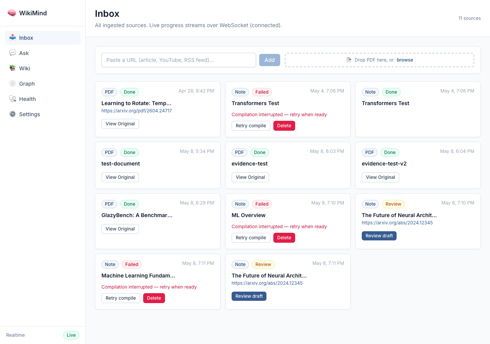
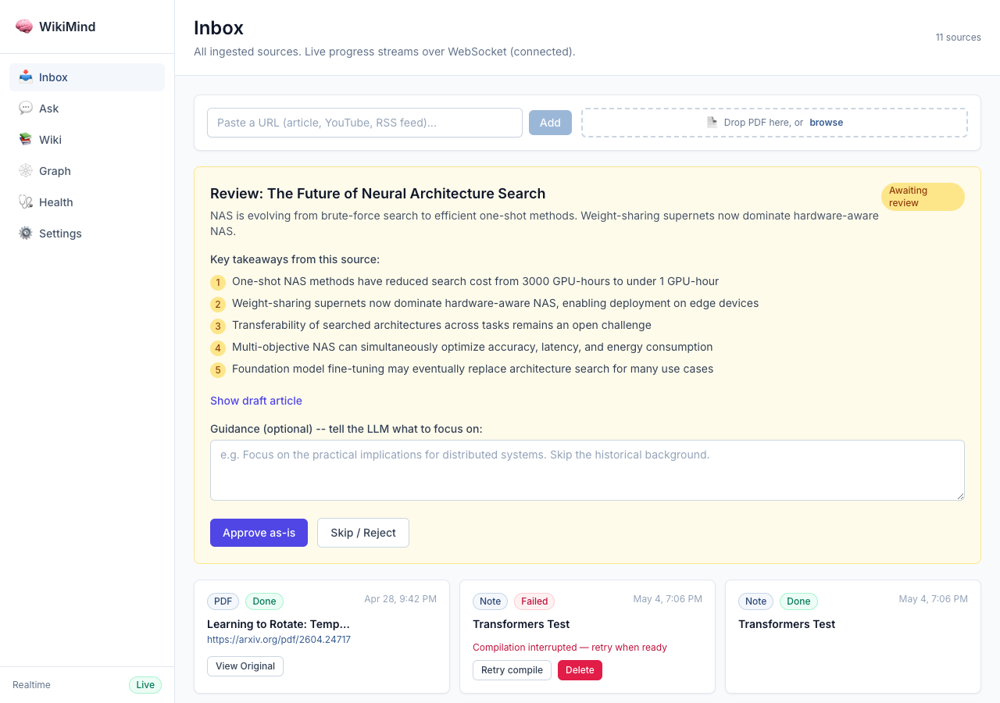
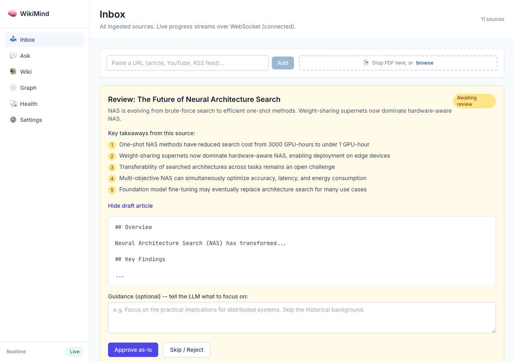
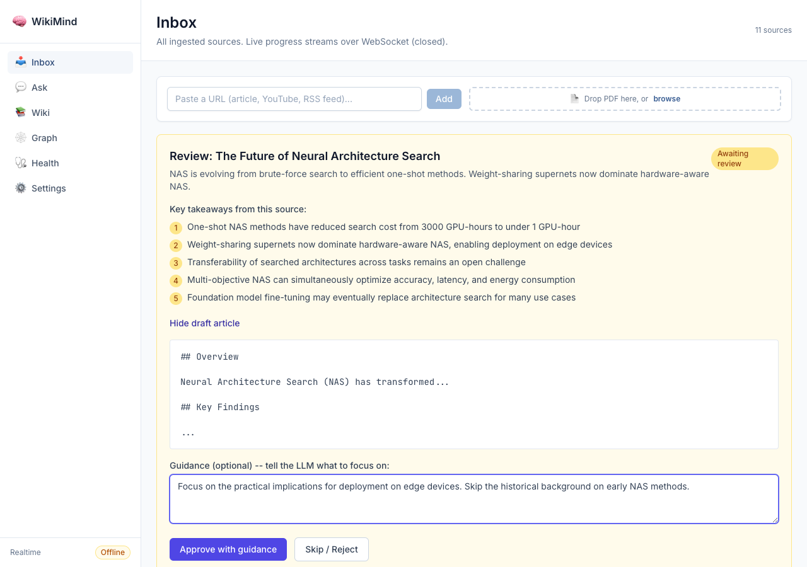

Evidence report for issue #418 -- interactive compilation review workflow
An optional "discuss before compile" mode that lets users review key takeaways, provide focus guidance, and approve or reject compilation drafts before articles are saved to the wiki.
REVIEW_PENDING ingest status -- sources pause in this state until the user reviewsdraft.ready notifies the frontend when a draft is ready for reviewWIKIMIND_COMPILER__INTERACTIVE=true (default: false)Sources in review_pending state show an amber Review badge and a "Review draft" button.

Clicking "Review draft" opens the DraftReviewPanel inline. It shows the title, summary, 5 numbered key takeaways extracted by the LLM, and action buttons.

Users can expand the full draft article body to review what the LLM generated before approving.

When the user types focus guidance, the "Approve as-is" button changes to "Approve with guidance". The source will be re-compiled with the user's direction weighted into the prompt.

11 new tests covering the draft service, model, and API endpoints. All pass.
test_create_draft -- draft creation and source status updatetest_get_draft_for_source -- retrieval of pending draftstest_get_draft_not_found -- 404 for missing draftstest_to_response -- API response serializationtest_reject_draft -- rejection resets source to pendingtest_approve_draft_without_guidance -- approval saves the articletest_ingest_status_review_pending -- enum validationtest_compilation_draft_model -- model defaultstest_get_draft_endpoint_404 -- API 404 handlingtest_reject_draft_endpoint_404 -- API 404 handlingtest_approve_draft_endpoint_404 -- API 404 handlingGET /api/ingest/sources/{id}/draft
Returns the pending compilation draft with key takeaways and draft article body.
POST /api/ingest/sources/{id}/draft/approve
Approves the draft, optionally with guidance for re-compilation.
POST /api/ingest/sources/{id}/draft/reject
Rejects the draft and resets the source to pending.